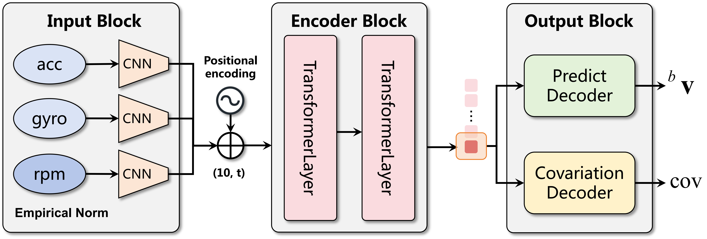
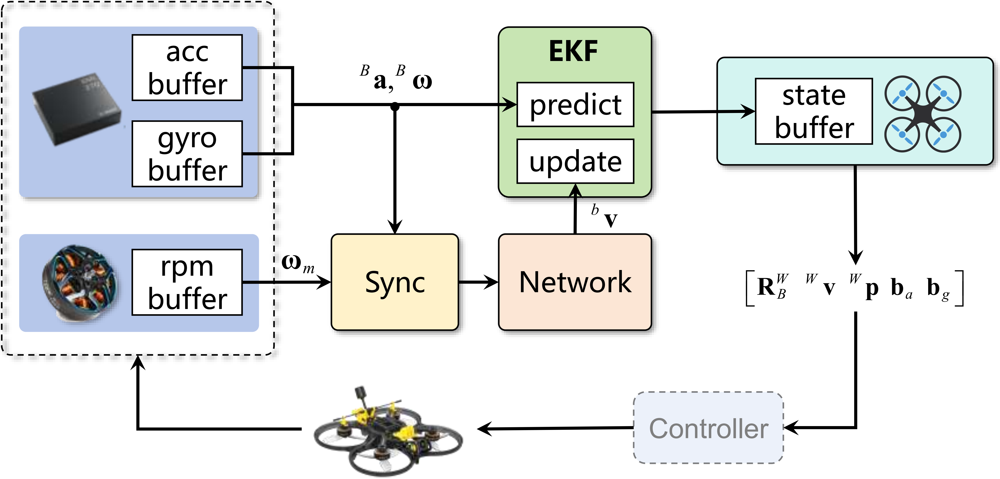

Inertial Odometry (IO) has gained attention in quadrotor applications due to its sole reliance on inertial measurement units (IMUs), attributed to its lightweight design, low cost, and robust performance across diverse environments. However, most existing learning-based inertial odometry systems for quadrotors either use only IMU data or include additional dynamics-related inputs such as thrust, but still lack a principled formulation of the underlying physical model to be learned. This lack of interpretability hampers the model’s ability to generalize and often limits its accuracy. In this work, we approach the inertial odometry learning problem from a different perspective. Inspired by the aerodynamics model and IMU measurement model, we identify the key physical quantity---rotor speed measurements required for inertial odometry and design a transformer-based inertial odometry. By incorporating rotor speed measurements, the proposed model improves velocity prediction accuracy by 36.9\%. Furthermore, the transformer architecture more effectively exploits temporal dependencies for denoising and aerodynamic modeling, yielding an additional 22.4\% accuracy gain over previous results. To support evaluation, we also provide a real-world quadrotor flight dataset capturing IMU measurements and rotor speed for high-speed motion. Finally, combined with an uncertainty-aware extended Kalman filter (EKF), our framework is validated across multiple datasets and real-time systems, demonstrating superior accuracy, generalization, and real-time performance.

Proposed transformer-based architecture: Verified measurements are normalized, encoded, and fed into a transformer to capture spatiotemporal dependencies. Finally, two fully connected decoders predict velocity and uncertainty.

Real-time system overview: IMU-derived acceleration, angular velocity, and rotor speed (via bidirectional DShot) are time-synchronized and fed into the network for velocity prediction. Subsequently, EKF performs prediction and update steps, outputting pose information to the controller for closed-loop control.
Comparison on different datasets
Real world validation in low light conditions
Comparison under different lighting conditions
@article{cui2026ai,
title={AI-IO: An Aerodynamics-Inspired Real-Time Inertial Odometry for Quadrotors},
author={Cui, Jiahao and Yu, Feng and Zhang, Linzuo and Hu, Yu and Zou, Danping},
journal={arXiv preprint arXiv:2603.00597},
year={2026}
}